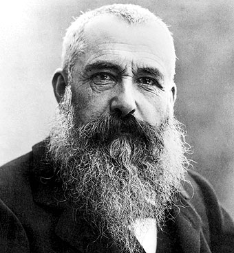
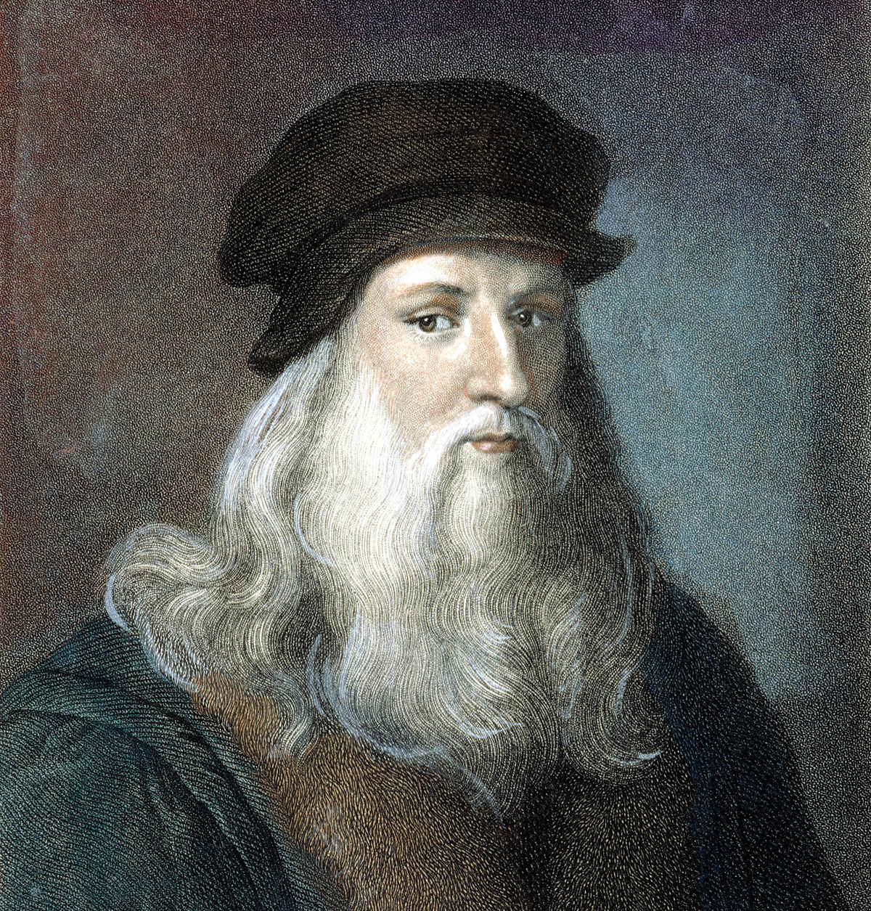

EXPONENTES DEL ARTE PICTORICO
PABLO PICASSO
En Málaga, España, estaban en medio de una difícil elección. El señor José Ruiz y Blasco había tenido un hijo con María Picasso López. Un hermoso niño de ojos brillantes, pero sus padres, que eran primerizos, no lograban dar con un nombre apropiado, así que decidieron ponerle varios nombres, su nombre completo es tan largo como su talento y trayectoria.
Pablo Diego José Francisco de Paula Juan Nepomuceno María de los Remedios Cipriano de la Santísima Trinidad Ruiz y Picasso, es el nombre de este gran artista. Aunque todas las personas lo llamaban simplemente Pablo Picasso.
Cuando Pablo cumplió ocho años, estaba interesado por el arte y decidió expresar su vena artística en un soporte de madera de cedro utilizando pinturas al óleo. Pintó entonces “El Picador Amarillo”, una obra que retrata un hombre vestido de amarillo sobre un caballo, al fondo hay tres personas con sombreros observando despreocupadamente. Su inspiración fue una corrida de toros que hubo en esa época y el color del albero que predomina en el cuadro.
Fue en París donde Pablo Picasso desarrolló un movimiento artístico llamado el cubismo. El cubismo se caracteriza por dibujar o pintar con muchas líneas y superficies. El círculo, el cuadrado, el triángulo y el rectángulo son los protagonistas en este movimiento. Se utilizan las figuras geométricas para hacer una representación de la realidad.
En 1973, a la edad de noventa y un años, murió debido a un edema pulmonar en su casa de Mougins, Francia. Sin embargo, las autoridades locales no le permitieron ser enterrado en la mansión y su esposa Jacqueline decidió enterrarlo en el castillo de Vauvenargues, también propiedad de Picasso, donde ella también sería enterrada años más tarde.
VICENT VAN GOGH
Vincent Van Gogh nació el 30 de marzo del año 1853 en Holanda. Era el hijo mayor de un sacerdote de quien heredó la vocación religiosa, su familia no tenía demasiado dinero. En 1863 entró en el colegio de Zerenbergen, pero tuvo que abandonarlo por la situación económica de sus padres. A los 16 años empezó a trabajar como empleado en la Galería de Arte Goupil de La Haya, que estaba siendo dirigida por su tío. Allí comienza su afición por la pintura y la literatura. La galería se trasladó a Londres y Vincent decidió mudarse a una pensión. Allí llevó una vida tranquila y comenzó a dibujar, pero después de ser rechazado por la mujer de la que estaba enamorado, se volvió violento y huraño y se trasladó a París. En esos momentos tan deprimentes de su vida vio la religión como su único camino y decidió hacerse sacerdote, pero no fue admitido en el seminario. Al fin se hizo predicador, nombrado por el consistorio de Bruselas, y fue destinado a Borinage. Allí convivió con unos mineros, pero después de apoyar una de sus huelgas le retiraron de la vida religiosa y él decidió dedicarse enteramente a la pintura y a la lectura. Trabajó como profesor, predicador y vendedor de libros, hasta darse cuenta de que el dibujo era su verdadera pasión. Gracias a su hermano Theo entró a los 27 años en la Academia de pintura de Bruselas. En un viaje a La Haya en 1881 empieza a relacionarse con los círculos de artistas del lugar y decide interesarse por la naturaleza muerta. Aunque siguió dibujando no conseguía vender sus dibujos ni sus cuadros y empezó a recibir dinero de su hermano Theo, con quien se escribió cartas durante toda su vida para informarle de su situación. Vincent empezó a tener alucinaciones y a padecer dolores muy graves, así que su hermano decidió ingresarlo en el Hospital de Saint Paul, donde le rechazaron. El Hospital de Saint Reney lo acogió y le diagnosticaron epilepsia y esquizofrenia. Aún con su enfermedad, Vincent siguió pintando y dibujando sin parar, aunque sus obras continuaron sin tener éxito y sin darle dinero. Tan sólo vendió dos cuadros en su vida.
El 29 de julio del año 1890 Vincent murió en Francia.
PAUL GAUGIN
(París, 1848 - Atuona, Polinesia francesa, 1903) Pintor francés, uno de los principales representantes del postimpresionismo. Hijo de un periodista francés y con sangre peruana por parte de madre, su familia hubo de huir a Lima tras el golpe de Estado de Napoleón III (1851). Cuando era todavía un adolescente, Paul Gauguin se enroló en la marina mercante; tras regresar en 1871 a París, entró a trabajar en una empresa financiera de la capital, contrajo matrimonio y llevó una vida acomodada.
En esta época Paul Gauguin empezó a desarrollar un fuerte interés por el arte, que le llevó a tomar clases de pintura y a reunir una copiosa colección de obras impresionistas que incluía trabajos de Édouard Manet, Paul Cézanne, Claude Monet y Camille Pissarro. En 1875 trabó conocimiento personal con este último y empezó a trabajar con él; resultado de tan fecunda colaboración fue la invitación a participar en la quinta Exhibición Impresionista de 1880, que sería reiterada en los dos años siguientes.
Su creciente interés por la pintura se unió al desplome de la Bolsa parisina para conducirle a tomar la decisión de dedicarse íntegramente a la actividad artística. Al año siguiente se trasladó a Copenhague, residencia familiar del padre de su esposa, en busca de apoyo económico, pero su empeño fracasó rotundamente y poco después abandonaría a esposa e hijos. A partir de ese momento Gauguin vivió en la penuria, rechazado por una sociedad que con anterioridad le había abierto los brazos y que en breve iba a aborrecer. Entre 1886 y 1888 su obra experimentó un giro radical, cuyo origen cabe buscar en dos experiencias vitales de gran importancia: su encuentro con Vincent van Gogh y su primer viaje a la Martinica.
Entre 1891 y 1903 Paul Gauguin efectuó largas estancias en Tahití y las islas Marquesas, donde su primitivismo fue atemperándose al abrirse a la influencia de neoclásicos como Jean Auguste Dominique Ingres o contemporáneos como el nabi Pierre Puvis de Chavannes. Este proceso corrió de la mano de un creciente refinamiento tonal y de la presencia en su producción de una aura onírico-poética que en modo alguno parece reflejar la enfermedad y los conflictos personales (particularmente sus enfrentamientos con las autoridades locales en defensa de las comunidades indígenas) que marcaron los últimos años de su vida.
CLAUDE MONET

Claude Monet es un pintor francés conocido por su aportación en el movimiento artístico denominado Impresionismo. Nacido en París, el 14 de noviembre de 1840, pasa su infancia en Normandía, en la ciudad de El Havre, donde se instala junto a su familia con tan sólo cinco años. Poco a poco, el joven Monet logra desarrollar su pasión, empezando por la caricatura y, en 1859, estudiando pintura en la Academia Suiza de París, con el apoyo de su padre. Su marcha a Argelia al servicio militar en 1861 interrumpe sus estudios, sin embargo, continúa experimentando diferentes efectos artísticos. A su vuelta a París en 1862 tras una enfermedad que contrae (pleuresía), conoce al pintor suizo Charles Gleyre y trabaja junto a Alfred Sisley, Auguste Renoir y Frédéric Bazille, que se convertirán en buenos amigos.
Durante la segunda mitad de la década de 1860, Monet pinta un estilo que recuerda al de Edouard Manet. A medida que amplía su estilo, Claude Monet se enfrentará a dificultades económicas, ya que ningún Salón quiere exponer sus lienzos, a pesar del éxito de La Femme en robe verte, que representa a Camille Doncieux, la mujer que se convertirá en su esposa en 1870. Posteriormente, Monet viaja a Londres durante la Guerra franco-prusiana y conoce al comerciante Paul Durand-Ruel, quien le comprará sus lienzos y contribuirá a la difusión de las obras de los impresionistas.
En 1883, se traslada definitivamente a Giverny con su amiga Alice Hoschedé, los seis hijos que ella tuvo con Ernest Hoschedé y sus dos hijos propios; su último hijo no llegará a conocer a su madre, muerta en el parto en 1879. Giverny se convertirá en un verdadero remanso de paz para Monet. A pesar de los numerosos viajes que realizará para inspirarse con los diferentes paisajes franceses, finalmente será en 1890 cuando decidirá comprar la casa en la que vivía en Giverny, y cuyos jardines le inspirarán para crear obras tan famosas hoy en día como la serie de los Nenúfares. El 5 de diciembre de 1926, Monet fallece en su casa de Giverny rodeado por su familia. Tras su fallecimiento, se creará la fundación de Monet para conservar el patrimonio de Giverny y abrirlo al público.
EDOUART MANET
Nació en París el 23 de enero de 1832, en una familia acomodada.3 Sus días escolares pasaron sin acontecimientos destacables y terminó su formación sin obtener la calificación necesaria para estudiar derecho, para decepción de su padre, que era magistrado. Sus primeros contactos con el arte se produjeron en la etapa escolar. A los dieciséis años viajó a Río de Janeiro como marinero en prácticas, con intención de ingresar en la Academia Naval Francesa.
Con el consentimiento paterno, decide iniciar los estudios en el taller de Thomas Couture. Las clases se complementaban con visitas a museos. En 1856 abandona el taller ya que consideraba anticuadas las enseñanzas del maestro. Estuvo casi seis años como alumno de Thomas Couture, un pintor muy estrecho de miras como profesor. Al mismo tiempo pudo copiar en el Louvre cuadros no solo de Tiziano y Rembrandt, sino también de Goya, Delacroix, Courbet y Daumier De Couture aprendió que para ser un gran maestro hay que escuchar las enseñanzas de los que lo han sido en el pasado
El 26 de octubre de 1863 contrajo matrimonio con la pianista neerlandesa Suzanne Leenhoff, con quien mantenía relaciones desde 1850. A pesar de la boda, el que casi con seguridad era su hijo, León, nacido en 1852, siguió llevando el apellido de la madre, y pasando por hermano de ella Es uno de los personajes del cuadro Homenaje a Delacroix, que Henri Fantin-Latour pintó en 1864.
Hacia 1880, su salud empezó a deteriorarse a causa de un problema circulatorio crónico que no mejoró a pesar de someterse a tratamientos de hidroterapia en Bellevue. En esta época se reconoció su talento con una medalla de segunda clase concedida por el Salón y también fue nombrado Caballero de la Legión de Honor.
El 20 de abril de 1883, a causa de su enfermedad circulatoria crónica, le fue amputada la pierna izquierda, y diez días más tarde falleció a los 51 años de edad.
PAUL CEZANNE
Paul Cézanne (Aix-en-Provence, 19 de enero de 1839-Ib., 22 de octubre de 1906) fue un pintor francés posimpresionista, considerado el padre de la pintura moderna y cuyas obras establecieron las bases de la transición entre la concepción artística decimonónica hacia el mundo artístico del siglo XX, nuevo y diferente. Sin embargo, mientras vivió, Cézanne fue un pintor ignorado que trabajó en medio de un gran aislamiento. Desconfiaba de los críticos, tenía pocos amigos y hasta 1895 expuso solo de forma ocasional. Fue un «pintor de pintores»,1 que la crítica y el público ignoraban, siendo apreciado solo por algunos impresionistas y al final de su vida por la nueva generación.
Se inscribió en la Academia Suiza (Académie Suisse), una academia privada en la que trabajaba con modelos del natural y en la que no había exámenes ni lecciones, todo ello para preparar el examen de ingreso en la École des Beaux-Arts. En el Museo del Louvre descubrió la obra de Caravaggio y de Velázquez, lo que marcó profundamente su evolución artística. Cuando rechazaron su candidatura a la École des Beaux-Arts (Escuela de las Bellas Artes), regresó a Aix y aceptó un empleo en el banco de su padre.
En 1895 se celebró su primera exposición individual, organizada por Vollard, con 100 lienzos. Este marchante promocionó la obra de Cézanne con gran éxito durante los años siguientes, logrando que subiera su cotización, como se comprueba al ver los precios de las ventas Duret y Tanguy (1894)8 y la venta Chocquet de 1899.9 En 1897 murió su madre, lo que le permitió reconciliarse con su mujer. Vendió Jas de Bouffan y alquiló un lugar en Rue Boulegon, donde construyó un estudio. También alquiló una habitación en el Château Noir, cerca de Aix, donde se prepara un pequeño estudio. Pasó una temporada en Le Tholonet, en la ladera de la montaña Sainte-Victoire, haciendo de ella objeto de su pintura, lo mismo que la cantera de Bibémus.
Émile Bernard, que ya en 1892 había dedicado un artículo a Cézanne, estuvo trabajando con él durante todo un mes en 1904.10 Ese mismo año, el Salón de Otoño le dedicó toda una sala, con 30 cuadros y dos dibujos. En 1905 Vollard presentó las acuarelas de Cézanne. Era ya un pintor de prestigio. Se sucedían exposiciones retrospectivas. Muchos pintores jóvenes viajaron hasta Aix-en-Provence para verle trabajar y pedirle consejo durante los últimos años de su vida. Sin embargo, tanto su estilo como sus teorías continúan siendo misteriosas y crípticas; para unos era un pintor primitivo ingenuo y para otros un complicado maestro en los procedimientos técnicos.
Un día, Cézanne se vio atrapado por una tormenta mientras trabajaba en el campo.11 Solo después de haber trabajado durante dos horas bajo el aguacero decidió regresar a casa; pero en el camino se desmayó. Lo llevó a casa un conductor que pasaba por allí.11 Su ama de llaves le frotó los brazos y las piernas para restaurar la circulación; como resultado, recuperó la consciencia.11 Al día siguiente, pretendía seguir trabajando, pero más tarde se desmayó; el modelo pidió ayuda; le metieron en la cama, en Lauves de donde no volvió a salir.11 Murió unos pocos días después, el 22 de octubre de 1906,11 a causa de una neumonía y fue enterrado en el antiguo cementerio en su amada ciudad natal de Aix-en-Provence.12 Después de su muerte, su estudio en Aix se convirtió en un monumento, Atelier Paul Cézanne, o les Lauves.
AUGUSTE RENOIR
El pintor impresionista Pierre-Auguste Renoir nació el 25 de febrero del año 1841 en la ciudad de Limoges, Francia, y murió el 3 de diciembre del año 1919 en la ciudad de Cagnes-sur-Mer, perteneciente a los Alpes Marítimos, Francia. Es reconocido por plasmar en el estilo impresionista una dimensión erótica, inspirados en cuerpos femeninos. En vida fue tomado como una figura fundamental del arte por parte de colegas y críticos. Sus pinturas están marcadas además por una tendencia a la felicidad y la búsqueda de la belleza.
En 1848, Pierre-Auguste Renoir empieza su educación en una escuela perteneciente a Los Hermanos de Escuelas Cristianas, en este lugar destacó por su capacidad de canto que le llevó a ser parte del coro en la iglesia Saint Eustache. En 1854 la situación de la familia sigue sin ser alentadora, por lo que abandona sus estudios y comienza a recibir aprendizaje respecto a la técnica de pintura de porcelanas en talleres de clase gratuita. El joven Pierre mostraba un progreso marcadamente acelerado, por lo que se le empezaron a designar trabajos sólo para profesionales. Émile Laporte, un compañero de trabajo fue el primero en percatarse de las habilidades para la pintura que presentaba el joven Pierre al prestarle algunos materiales para la pintura al óleo, por lo que intentó convencer a su familia para que le pagaran estudios de pintura.
Debido a constantes rechazos de sus obras para ser expuestas en El Salón Oficial, siendo destinada al Salón de los Rechazados, busca un nuevo lugar que permita mostrar sus pinturas con total libertad. En 1860, en compañía de muchos de sus colegas finalmente exponen sus obras de arte en un lugar dispuesto por el fotógrafo Gaspard Félix Tournachon. En 1874, con la disposición de reunir la mayoría de pintores de estilo impresionista se realiza una exposición de arte sobre estos, Renoir presenta algunos de sus trabajos para este evento, captando buena atención del público.
En 1876 se reorganiza una nueva exposición de arte impresionista, en este evento aparece una de sus pinturas más famosas y de las más representativas del estilo impresionista El moulin de la Galette. Entre 1881 y 1882 sus contantes traslados influyen en los paisajes que representan sus obras, siendo estos muy variados. Hacia 1883 siente la necesidad de variar el estilo impresionista, pues siente que carece de elementos, desarrollando así un estilo propio en el manejo de colores, trazo y temática, cargando de erotismo sus pinturas posteriores.
Para el año de 1919, el 3 de diciembre, fallece a causa de neumonía en el museo Domaine des Collettes, luego de finalizar su ultimo bodegón
LEONARDO DA VINCI

Leonardo da Vinci (Leonardo di ser Piero da Vinci) Loudspeaker.svg escuchar (Vinci, 15 de abril de 14522-Amboise, 2 de mayo de 1519) fue un polímata florentino del Renacimiento italiano. Fue a la vez pintor, anatomista, arquitecto, paleontólogo,3 artista, botánico, científico, escritor, escultor, filósofo, ingeniero, inventor, músico, poeta y urbanista. Murió acompañado de Francesco Melzi,4 a quien legó sus proyectos, diseños y pinturas.2 Tras pasar su infancia en su ciudad natal, Leonardo estudió con el pintor florentino Andrea de Verrocchio. Sus primeros trabajos de importancia fueron creados en Milán al servicio del duque Ludovico Sforza. Trabajó a continuación en Roma, Bolonia y Venecia, y pasó sus últimos años en Francia, por invitación del rey Francisco I.
Su asociación histórica más famosa es la pintura. Dos de sus obras más conocidas, La Gioconda y La Última Cena, han sido copiadas y parodiadas en varias ocasiones, al igual que su dibujo del Hombre de Vitruvio. No obstante, únicamente se conocen alrededor de 20 obras suyas, debido principalmente a sus reiterados (y a veces desastrosos) experimentos con nuevas técnicas y a su inconstancia crónica. Este reducido número de creaciones, junto con sus cuadernos con dibujos, diagramas científicos y reflexiones sobre la naturaleza de la pintura, constituyen un legado para las sucesivas generaciones de artistas.
Durante toda su vida estuvo al servicio de varios duques que le encargaban esculturas y pinturas de sus familias para enseñarlas en sus salones y sus jardines, pero lo que de verdad le interesaba era inventar nuevos vehículos, armas y objetos.
Aunque siempre estuvo creando y construyendo nuevas obras, las luchas que hubo mientras vivía, tanto las luchas y rebeliones que hubo después de su muerte, fueron las culpables de que muchas de las cosas que creó fueran destruidas, quemadas o perdidas, incluyendo sus restos que los tiraron en un lugar desconocido después de una guerra.
Murió el 2 de mayo de 1519 en Francia.
SALVADOR DALI
Salvador Felipe Jacinto Dalí i Domènech, marqués de Dalí de Púbol (Figueras, 11 de mayo de 1904-ibídem, 23 de enero de 1989) fue un pintor, escultor, grabador, escenógrafo y escritor español del siglo XX. Se le considera uno de los máximos representantes del surrealismo.
Salvador Dalí es conocido por sus impactantes y oníricas imágenes surrealistas. Sus habilidades pictóricas se suelen atribuir a la influencia y admiración por el arte renacentista. También fue un experto dibujante.23 Los recursos plásticos dalinianos también abordaron el cine, la escultura y la fotografía, lo cual le condujo a numerosas colaboraciones con otros artistas audiovisuales. Tuvo la capacidad de acrisolar un estilo genuinamente personal y palpable al primer contacto, que en realidad era muy ecléctico y que «succionó» de innovaciones ajenas. Una de sus pinturas más célebres es La persistencia de la memoria (también conocida como Los relojes blandos), realizada en 1931.
El 21 de mayo de 1924, Salvador Dalí sería detenido durante la visita de Alfonso XIII a Figueras. Estuvo doce días encarcelado en la prisión de Gerona (probablemente también en Figueres), obviándose en su expediente el motivo de detención. Algunas fuentes indican este hecho como represalia a las declaraciones antimonárquicas de su padre.2021 Ese mismo año, un todavía desconocido Salvador Dalí ilustró un libro por primera vez. Era una publicación del poema en catalán Les Bruixes de Llers, de uno de sus amigos de la residencia, el poeta Carles Fages de Climent. Dalí pronto se familiarizó con el dadaísmo, influencia que lo marcó el resto de su vida. En la residencia también trabó una apasionada relación con el joven Lorca, pero Dalí terminó rechazando los amorosos reclamos del poeta
Tras su retorno a Cataluña tras la guerra, Dalí se aproximó al régimen franquista. Algunas de las declaraciones de Dalí sirvieron como respaldo a la dictadura; así felicitó a Franco por sus acciones dirigidas a «limpiar España de fuerzas destructivas».98 Dalí, que se había convertido al catolicismo y se fue volviendo una persona más religiosa con el paso de los años, podía referirse a los grupos comunistas, socialistas y anarquistas que durante la época de guerra civil habían asesinado a más de siete mil monjas y sacerdotes.99100 Dalí envió incluso algunos telegramas a Franco, elogiando la pena de muerte con que el dictador había condenado a algunos criminales de guerra.46 Dalí incluso conoció a Franco personalmente101 y pintó un retrato de la nieta del dictador. En 1972 de manos del propio ministro José Luis Villar Palasí recibió la medalla de oro de Bellas Artes.
Muere en Figueres el 23 de enero de 1989. Se realiza una gran retrospectiva "Salvador Dalí, 1904-1989" en la Staatsgallerie de Stuttgart que posteriormente se exhibe en la Kunsthaus de Zúrich.
JOAQUIN SOROLLA
(Valencia, 1863 - Cercedilla, España, 1923) Pintor español. Formado en su ciudad natal con el escultor Capuz, estudió posteriormente las obras del Museo del Prado y, gracias a una beca, pudo residir y estudiar en Roma de 1884 a 1889. En esta época se dedicó sobre todo a cuadros de temática histórica, que no ofrecen demasiado interés.
Un viaje a París en 1894 lo puso en contacto con la pintura impresionista, lo que supuso una verdadera revolución en su estilo. Abandonó los temas anteriores y comenzó a pintar al aire libre, dejándose invadir por la luz y el color del Mediterráneo. Son precisamente las obras de colores claros y pincelada vigorosa que reproducen escenas a orillas del mar las que más se identifican con el arte de Sorolla.
Su estilo agradable y fácil hizo que recibiera innumerables encargos, que le permitieron gozar de una desahogada posición social. Su fama rebasó las fronteras españolas para extenderse por toda Europa y Estados Unidos, donde expuso en varias ocasiones. De 1910 a 1920 pintó una serie de murales con temas regionales para la Hispanic Society of America de Nueva York.
En 1920, mientras pintaba en el jardín de su casa el retrato de la mujer de Ramón Pérez de Ayala, sufrió una hemiplejia que mermó sus facultades físicas, impidiéndole seguir pintando. Murió tres años después en su residencia veraniega de Cercedilla el 10 de agosto de 1923.